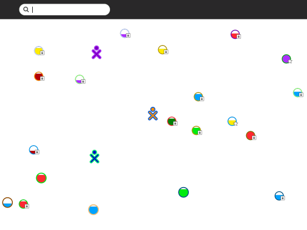
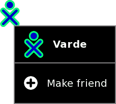
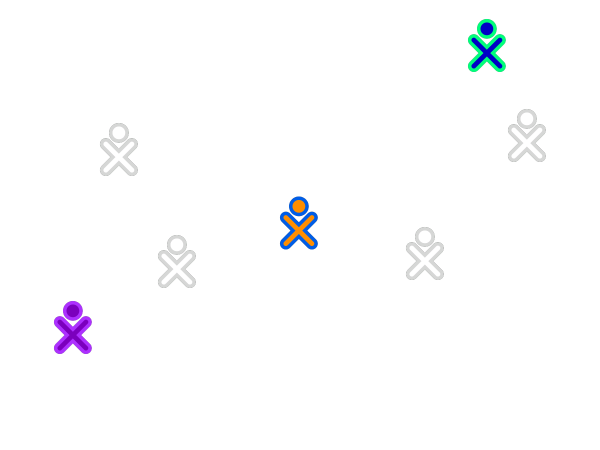
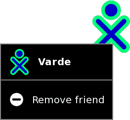
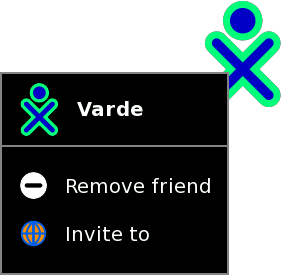

| Vue de Voisinage | Index | Vue Accueil |
La Vue de Groupe montre vos amis (les icônes XO foncés représentent vos amis actuellement hors ligne).
Afin de voir la Vue de Groupe, cliquez sur l'icône Groupe dans le Cadre, ou pressez la touche F2.

Vous ajoutez un ami dans la Vue de Groupe depuis la Vue de Voisinage.

Lorsque vous glissez votre pointeur sur une icône XO, l'option menu En faire un ami apparaît. Cliquez sur cette option pour ajouter une personne en tant qu'ami.

L'icône de votre nouvel ami apparaîtra dans la Vue de Groupe.

Vous pouvez supprimer un ami de la Vue de Groupe en utilisant le menu déroulant. Cliquez sur Supprimer de mes amis. L'icône de cette personne disparaîtra de la Vue de Groupe.

Depuis le menu déroulant, vous pouvez aussi inviter des amis à rejoindre votre Activité en cours. Vous trouverez plus d'informations au sujet des invitations et des partages dans le chapitre Collaborer.
| Vue de Voisinage | Index | Vue Accueil |